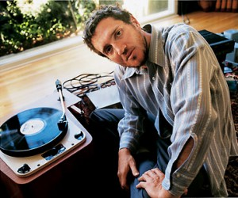
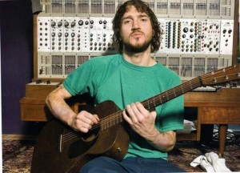

Gitarzysta Red Hot Chili Peppers, John Frusciante, uczy się robić genialne błędy na swoich solowych albumach. Jest ich naprawdę wiele. Wywiad prowadzi Patrick Berkery.
Przeczytanie tego wywiadu z Johnem zajmie ci około 15 minut. W tym czasie gitarzysta Red Hot Chili Peppers i jego częsty współpracownik, multiinstrumentalista Josh Klinghoffer mogą nagrać podstawowe ścieżki do 6, 7 utworów wraz z nakładką perkusyjną. Może zbyt bardzo przesadzam, ale właśnie to wspaniale pokazuje, że pozostawiony sam sobie John Frusciante działa naprawdę szybko i dość często. Przewidziane jest wydanie pół tuzina albumów przez Record Collection Label, z których każdy został nagrany, zmiksowany i stworzony w okresie sześciu miesięcy kończących ubiegły rok.
Pierwszym wydanym dziełem Johna będzie jego piąty solowy album „The Will To Death”, który ukaże się w czerwcu. Zarysowany podczas kilku sesji szaloną kreską, album celowo brzmi surowo, bez przyspieszających dźwięków. Psychodeliczno-rockowy album z ciężką melodią i takimże nastrojem, „Death” pozostawia wiele otwartych przestrzeni w wolnym tempie pięknego wyrazu pracy gitary Johna Frusciante.
Albumami wydawanymi w tym roku pod nazwiskiem Frusciante będą również: „D.C. EP” (nagrany wraz z Ianem MacKaye’m oraz technicznym/drugim perkusistą Fugazi – Jerrym Busher’em) i pełnowymiarowe „Inside Of Emptiness” jak i „A Sphere In The Heart Of Silence”. Zastanów się, gdzie on znajduje czas?
„Odrzuciłem wiele z tych rzeczy, które powinieneś robić jako dorosły” – wyjaśnia Frusciante. „Mam taką możliwość, ponieważ zarabiam na życie jako muzyk. Nie oglądam wiadomości. Nie czytam gazet. Nie śledzę polityki. Nie inwestuje swoich pieniędzy. Dla mnie życie jest słuchaniem muzyki, oglądaniem filmów, czytaniem książek, graniem na moich instrumentach, które są dla mnie niczym zabawki.”
„Nigdy nie widziałem nikogo z tak silną wolą twórczą” – powiedział Klinghoffer, który pracował między innymi z PJ Harvey. „Mogę być tego pewny, jest naprawdę niewiele osób które mogłyby to zmienić, ponieważ wierzę w to, co John chce osiągnąć”.
Z jego awangardowo-rockowym projektem Ataxia, którego członkami byli również Klinghoffer i basista Fugazi Joe Lally, Frusciante w sierpniu wyda w dużej mierze improwizowany „Automatic Writing”. Drugi album Ataxii (materiały z tej samej sesji) oraz pudełko zawierające kompilację wszystkich solowych albumów Johna planowane są na przyszły rok.
„Wszystko dzieje się tak szybko, że jest to naprawdę poza mną” – mówi Lally z Ataxii. „Nigdy nie zrobiłem czegoś podobnego. Miałem kilka pomysłów, zabrałem je ze sobą do studia, weszliśmy i zrobiliśmy show! Nawet nie wiem, jak wtedy muzycznie stałem. Byłem przyzwyczajony przez lata pracować z trzema facetami, z którymi byłem niewolniczo pochylony nad utworami. Dla Johna jest to idealne, ponieważ nie jest zwykle tym, co stało by się z Chili Peppers. Ja starałem trzymać się podczas tej przejażdżki.”
W swoim domu w Los Angeles John Frusciante jest z powrotem w trybie Chili Peppers. Zespół zakończył niedawno trasę po Europie i pracuje nad nowym albumem. Frusciante nie chce powtórzyć historii z ’90, kiedy odszedł z Red Hot Chili Peppers i walki z uzależnieniem od heroiny, która wtedy nastąpiła. Pytany o okoliczności powstania jego czterościeżkowej, szokującej terapii wibracjami, jego solowy debiut z 1994 roku „Niandra LaDes and Usually Just A T-Shirt”, Frusciante natychmiast ma bolesny ton, sycząc: „Ten album nie został nagrany, gdy byłem uzależniony od heroiny. Został wydany gdy byłem od niej uzależniony.”
Tworzenie muzyki, zwiedzanie świata z muzycznymi duszami Anthonym Kiedisem, Flea, Chadem Smithem w molochach modern-rocka czy nagrywanie tanimi sposobami i na bieżąco z przyjaciółmi takimi jak Klinghoffer czy Lally – jest tym, co sprawia, że John Frusciante czuje się szczęśliwy. Można to usłyszeć w jego nadmiernym rytmie, kiedy to omawia. On brzmi jak mały sześciolatek na widok ciastek Bendera.
„Nie czułbym się zdolny do tworzenia muzyki, gdyby małe dziecko znajdujące się wewnątrz mnie nie było tak silne” – mówi 34-letni Frusciante. „To samo, co sprawia, że czuję się podekscytowany słuchając nagrań Aphex Twin jest tym, co wytwarzało we mnie chęć oglądania Electric Company gdy byłem dzieckiem. Ta część mnie jest otwarta na nowe rzeczy, przeżywanie ich i bycie podekscytowanym światem, który mnie otacza.”

Patrick Berkery: Czy uważasz, że Chili Peppersowe szlifowanie – spędzanie sześciu do ośmiu miesięcy nad tworzeniem albumu, następnie 18-miesięczna trasa koncertowa – nie dławi kreatywności?
John Frusciante: Z pewnością nie uważam, że może to dławić jakąś część kreatywności, ponieważ wiem, że Anthony i Flea wierzą, że jestem odpowiedzialny za tworzenie muzyki w ogóle. Kiedy chcieli, bym wrócił do zespołu (Frusciante powrócił do zespołu w 1998, po sześcioletniej przerwie) wyszedłem z wprawy jako muzyk. Zdecydowanie byłem na niskim poziomie kreatywności. Ich zaufanie do mnie i moich zdolności do tworzenia muzyki było tym, co pozwoliło mi znów pisać utwory. Jednak jeśli chodzi o nasz harmonogram, to są rzeczy, które niezbyt podobają mi się, gdy jesteśmy w trasie przez półtora roku. W pewnym momencie naprawdę trudno jest wymyślić coś nowego, czego nigdy wcześniej nie zrobiłeś. Zaczynasz czuć, jakbyś skrobał dno beczki.
PB: Czy taki harmonogram jest impulsem by tworzyć całą tą muzykę w tak skoncentrowanym czasie?
JF: Powodem, przez który tworzę tą całą muzykę jest to, że ostatnie pięć lat było najbardziej twórczym okresem w moim życiu. Było to poparte ilością utworów, które napisałem w porównaniu do tego, jak wiele z nich nagrałem. Jednak czuję, że utwory, które stworzyłem w przeciągu ostatnich trzech lat są na innym poziomie. Więc kiedy skończyliśmy trasę „By The Way” z Red Hot Chili Peppers (tournee w listopadzie 2003), powiedziałem : „To jest moja szansa”. Poprosiłem o sześć miesięcy przerwy, Flea również chciał sześć miesięcy przerwy, więc podczas tego czasy nagrałem tyle utworów, ile tylko mogłem. I udało mi się nagrać około sześć albumów.
PB: W połowie lat ’90 przeżyłeś wiele czasu, podczas walki z uzależnieniem od heroiny, w którym nie tworzyłeś muzyki w ogóle, czy to prawda?
JF: Około 1997 roku próbowałem kilka razy coś nagrać, jednak za każdym razem kończyło się to żałośnie. Spodziewałem się, że będę w stanie nagrać kilka utworów tylko dlatego, że byłem kim byłem i miałem kilka szkiców. W zasadzie przez pięć lat pisałem tylko w notatnikach i przeglądałem artystyczne książki. Wtedy właśnie byłem w stanie wyjść i zagrać, jak to było w 1991. Tego nie było w kartach. Potrzebowałem trochę czasu by grać utwory przez sześć miesięcy, zanim byłem w stanie stworzyć jakikolwiek utwór.
PB: To nie przypadek, że albumy Red Hot Chili Peppers wydane po twoim powrocie do zespołu („Californication” z 1999 oraz „By The Way” z 2002) miały bardziej złożony zmysł melodyczny w porównaniu do agresywnego punk-funkowego brzmienia z wcześniejszych albumów.
JF: Tak, ale nie tylko na „Californication” czy „By The Way”. Na albumie „Blood Sugar Sex Magik” (1991) znalazły się takie utwory, jak: „I Could Have Lied”, „Breaking The Girl”, „Under The Bridge”. To zabawne, gdy ludzie myślą, że mam teraz większy wpływ. Zanim dołączyłem do zespołu, przeczytałem wywiad z Flea, w którym został zapytany, w jakim kierunku Red Hot Chili Peppers chce pójść w przyszłości. Odpowiedział, że chciałby zacząć tworzyć z większą zmianą akordów i melodii. Do tego momentu nie było żadnych zmian akordów czy melodii wartych uwagi. Pomyślałem: „To jest obszar, który rozumiem”. Jednak przez te lata Flea i Anthony stali się biegli w nim jak ja. Przez długi czas ludzie myślą, że ja coś napisałem, a naprawdę to było od Flea.
PB: Jak można określić to, co zatrzymujesz na swoje solowe projekty, a co masz dla Red Hot Chili Peppers?
JF: W tym momencie mogę śmiało powiedzieć, że gram naprawdę fajną partię gitarową. Jeśli byłoby to sześć miesięcy temu, może napisałbym utwór ponad siebie. Ale teraz jest czas na stworzenie albumu z Red Hot Chili Peppers, więc raczej zatrzymuje wszystko dla tego projektu. Z Red Hot Chili Peppers mogę napisać kompletną partię gitarową dla utworu, jednak nadal nie mam pojęcia, dokąd to będzie zmierzało, podczas gdy tworząc swoją muzykę, piszę partie gitary, partie wokalną, pisze słowa i wiem dokładnie, dokąd mój utwór będzie zmierzał. Mam dobry pomysł, jak to powinno wyglądać. Jestem otwarty na Josha, który tworzy partię basową lub perkusyjną. Lubię taką współpracę, jednak wszystko musi pasować do mojego wyobrażonego obrazu utworu. Mam pewien rodzaj estetycznego echo w mojej głowie. Grając z Chili Peppers jestem bardziej zainteresowany tym, że nie wiem czego mam się spodziewać.
PB: Jak wygląda proces twórczy kiedy działasz w tak napiętym harmonogramie?
JF: Z Joshem ćwiczy nam się bardzo dobrze, znamy utwory, które są w nas, zanim wstąpimy do studia. Nie jest tak, że siedzimy rozmyślając: „Jak zamierzamy to wyrazić?”. To zawsze jest tak automatyczne, że wiemy, co powinniśmy zrobić. Pracuję szybko, wszyscy wokół mnie wiedzą, że jesteśmy tam, aby robić interesy. Tak, możesz się bawić i żartować, kiedy jemy lub gdy ktoś konfiguruje pewne urządzenia, jednak jeśli jest czas na nagrywanie – nagrywasz. Nie siedzisz na kanapie przed telewizorem. Każdy wie, że jesteśmy tutaj po to, by robić muzykę. Płacę za to, więc zróbmy to.
PB: Jak poznałeś się z rodziną Fugazi?
JF: Poznałem ich w 1999 roku, kiedy kończyliśmy pracę nad „Californication”. Oni byli moim ulubionym zespołem i mieli swój wpływ na brzmienie „Californication”. Zacząłem chodzić na ich koncerty, byli naprawdę uprzejmi, mili i przyjaźni. Zaprzyjaźniliśmy się właśnie wtedy. Od tego czasu spotkaliśmy się około 25 razy.
PB: Byłeś fanem, czy były jakieś trudności w pracy z tą ekipą, szczególnie z Ianem MacKayem?
JF: Z Ianem było bardzo podobnie jak podczas, gdy nagrywam tutaj, w Los Angeles. Nie było zbędnych bzdur, nie było marnowania czasu. Ian miał z pewnością wiele wspólnego ze mną, gdy szedłem w kierunku „The Will To Death”. Ian wyjaśnił, że album Fugazi „Red Medicine” – moim zdaniem ich najlepszy album, to jest po prostu majstersztyk – kosztował $10.000 za nagranie. Prowadziliśmy rozmowy, które przyczyniły się do tego, że wiem, że niedoskonałości są czymś, z czego powinniśmy być dumni. Powinniśmy nad nimi pracować a nie wywoływać przeciwko nim wojnę. Zadałem sobie to wyzwanie: „Zrobię cokolwiek, by zrobić to nagranie do tej kwoty. Teraz będzie to częścią sztuki.” Filozofią Iana jest to, że ekonomia jest częścią sztuki. Dorastałem przy filozofii Ricka Rubina (producenta wszystkich albumów Red Hot Chili Peppers, począwszy od Blood Sugar), która mówiła, że możesz wydać dowolną kwotę, aby płyta była najlepsza, jaka może być. Już w to nie wierzę. „The Minutemen’s Double Nickels On The Dime” – klasyka – oni nagrali to w dwa dnia za $ 2.000. Dla mnie to wyzwanie. Stworzyć wspaniały album za $ 2.000.
PB: Jak można pogodzić ten sposób myślenia, kiedy rozpoczynasz nagrywać nowy album z Red Hot Chili Peppers?
JF: Próbuję wtedy stworzyć kompromis i pamiętać, że jest to zespół, a nie moja solowa twórczość. Nie mogę pośpieszać nikogo. W tym samym czasie nie mogę pozwolić na to, by ci ludzie bezsensownie marnowali pieniądze. Jednak myślę, że Chili Peppers poprawili się w tej kwestii, [Gdy Red Hot Chili Peppers rejestrowali utwory na "Greatest Hits" ubiegłego lata], znaleźliśmy sposób na miksowanie bez tracenia sporej ilości pieniędzy. Wcześniej zespół marnował ogromne ilości na miksowanie, poszło to trochę za daleko.
PB: Czy zamierzasz spędzić swoją następną przerwę w nagrywaniu z Chili Peppers na tworzeniu kolejnych solowych albumów, czy może na podróżowaniu?
JF: Jest coś, co planuje razem z Joshem zrobić po kolejnym cyklu z Red Hot Chili Peppers. Kiedy Red Hot Chili Peppers wydają kolejny album i wyjedziemy trasę, mam nadzieję, że mój solowy dorobek będzie bogatszy w nowe albumy. Wtedy ja i Josh założymy odpowiedni zespół, wyjedziemy w trasę, robiąc to w ten sam sposób, w jaki tworzymy kolejne utwory. Chcemy zagrać wiele koncertów, dostać się do wielu miejsc. Mielibyśmy wielki wybór utworów do zagrania, więc nie musielibyśmy grać tego samego zestawu co noc. Wyobrażam sobie punkt, w którym powiedziałbym: „Chcę sześć miesięcy wolnego od Red Hot Chili Peppers”, wtedy wraz z Joshem po prostu poszlibyśmy pracować.
Tłumaczenie: Patrycja
Żródło: http://www.magnetmagazine.com/2004/10/01/john-frusciante-perfect-from-now-on/